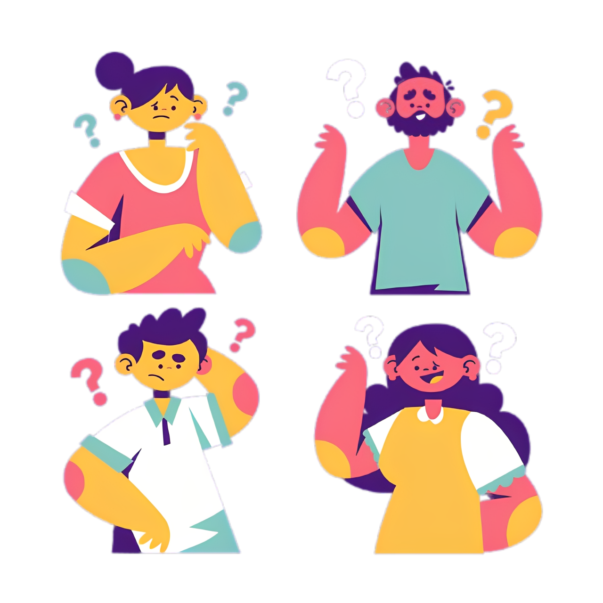
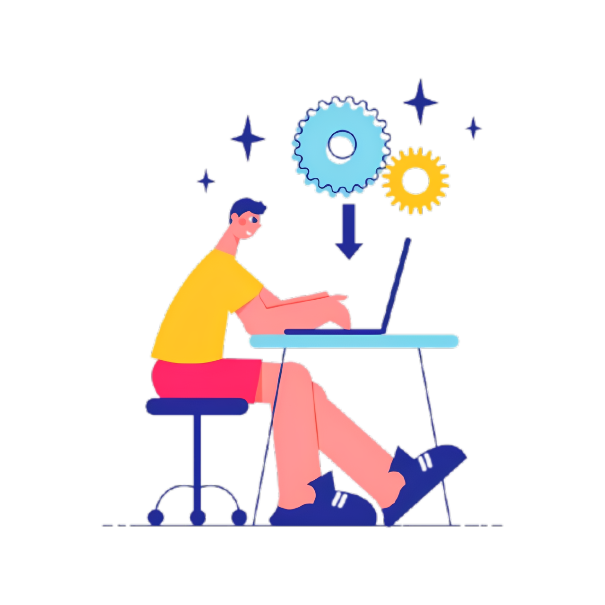
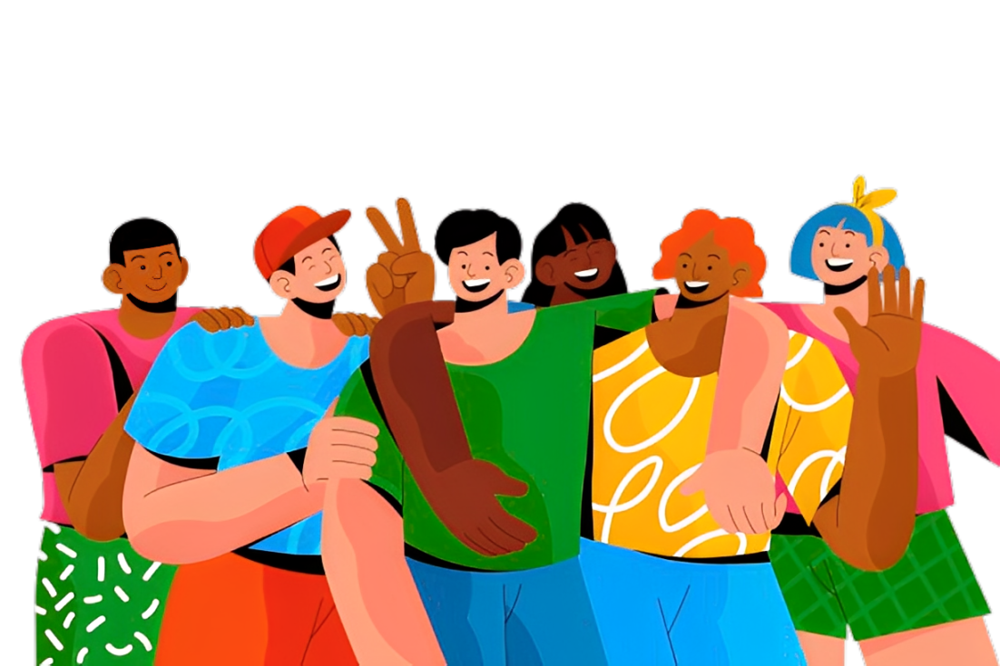

A Circularis é uma plataforma gratuita de troca de livros e materiais escolares, criada para incentivar o compartilhamento e a colaboração entre estudantes e leitores. Nosso propósito é dar um novo ciclo de vida ao que já não está sendo usado, tornando o aprendizado mais acessível para todos.


Na Circularis, compartilhar conhecimento é simples e rápido. Basta se cadastrar gratuitamente, anunciar os livros ou materiais escolares que não usa mais e, em poucos cliques, encontrar pessoas interessadas em trocar. Tudo acontece de forma colaborativa, criando um ciclo onde cada material ganha um novo propósito e continua ajudando outros a aprender.
A Circularis vai além de economizar dinheiro na compra de materiais: ele estimula um consumo mais consciente, reduzindo o desperdício e prolongando a vida útil dos livros. Cada troca representa menos resíduos no meio ambiente e mais acesso à educação de qualidade para quem precisa. Assim, você não apenas economiza, mas também faz parte de uma comunidade que gera impacto positivo no planeta.
Cada troca é um passo para um futuro mais sustentável.
Faça parte da Circularis e ajude
a espalhar conhecimento.
